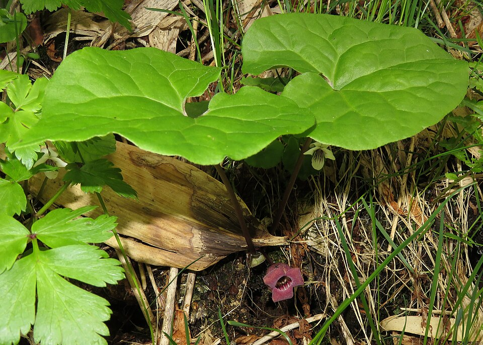
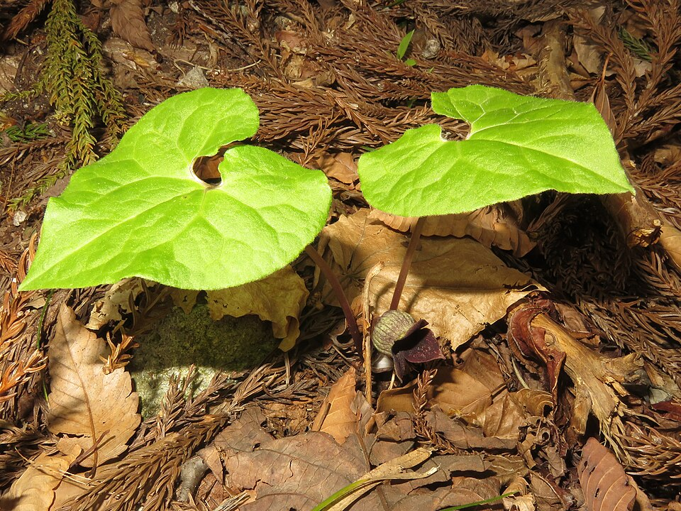

Xìxīn · Asarum root and rhizome细辛
Asari Radix et Rhizoma · Exterior-releasing herbs: acrid-warmAsari Radix et Rhizoma · 解表药·发散风寒药




- Flavour · nature性味
- acrid; warm辛，温
- Channels归经
- Heart, Lung, Kidney心、肺、肾经
- Direction升降浮沉
- Acrid, warm and penetrating, mainly ascending and floating: it reaches the head and sense organs, scatters wind-cold outside and transforms cold fluids inside辛温走窜，升浮为主，上达头面清窍，外散风寒，内化寒饮
- Toxicity毒性
- Mildly toxic小毒
- Dose (pharmacopoeia)用量（药典）
- 1–3 g (ceiling 3 g)（上限 3 克）
1–3 g decocted; 0.5–1 g per dose as a powder; external use as needed煎服 1–3 克；散剂每次 0.5–1 克；外用适量 - Pregnancy孕期
- Caution in pregnancy孕妇慎用 The pharmacopoeia lists no pregnancy restriction, but given the aristolochic-acid risk, the toxic oil and the lack of pregnancy data, this site treats it as caution: not advised in pregnancy.药典未列孕期禁忌；但细辛含马兜铃酸风险、挥发油有毒，孕期缺乏安全数据，本站从严按慎用：孕期不建议使用。
- Health Canada加拿大卫生部
- Health Canada: advisory issued加拿大卫生部：发过警示 Health Canada has warned about aristolochic acid since 1999; in October 2001 it listed Asarum among herbs not to consume because they may contain it, with a customs alert; in July 2004 it named Asarum (wild ginger, unrelated to common ginger) as a plant known to contain it and alerted border services to block imports; it repeated the warning in March 2005. Whether a current monograph exists is not yet verified.加拿大卫生部 1999 年起警示马兜铃酸；2001 年 10 月的公告把细辛属（Asarum）列入「可能含马兜铃酸、不要食用」的名单并发出海关警示；2004 年 7 月明确写细辛属（英文 wild ginger，与生姜无关）含马兜铃酸，并通知边境机构阻止入境；2005 年 3 月再次提醒。是否另有现行专论待核。
- Conservation资源与保护
- Both wild and cultivated; no international trade controls.野生与栽培并存，无国际贸易管制。
- Source来源
- Asarum heterotropoides Fr. Schmidt var. mandshuricum (Maxim.) Kitag.; Asarum sieboldii Miq. var. seoulense Nakai; Asarum sieboldii Miq.. Root and rhizome of three Asarum species, birthwort family (the whole plant has not been official since the 2005 pharmacopoeia)Asarum heterotropoides Fr. Schmidt var. mandshuricum (Maxim.) Kitag.（北细辛）；Asarum sieboldii Miq. var. seoulense Nakai（汉城细辛）；Asarum sieboldii Miq.（华细辛）。马兜铃科细辛属植物的根和根茎（2005 年版药典起不再用全草）
Toxicity: what goes wrong毒理：会出什么事
Two risks: (1) the volatile oil (methyleugenol, safrole and others) in large doses causes headache, vomiting, agitation and respiratory depression, with swallowed powder the most dangerous; (2) aristolochic acid I: the pharmacopoeia sets a limit for it in Xi Xin pieces; root and rhizome contain far less than leaves but not zero, and long-term accumulation carries kidney toxicity and cancer risk.两类风险：①挥发油（甲基丁香酚、黄樟醚等）大剂量可致头痛、呕吐、烦躁、呼吸抑制，散剂直接吞服最危险；②马兜铃酸 I：药典对细辛饮片设马兜铃酸 I 限量，根与根茎含量远低于叶，但不是零，长期累积有肾毒性与致癌风险。
Traditional actions and indications功效与主治（传统）
🏛 Traditional statements, not efficacy claims; the modern evidence is graded further down.以下为传统说法，不是疗效主张；现代证据见下文分级。
- Releases the exterior and dispels cold解表散寒
- Dispels wind and stops pain祛风止痛
- Opens the orifices通窍
- Warms the lungs and transforms fluids温肺化饮
Wind-cold common cold and colds in yang-deficient people; headache, toothache, wind-damp painful impediment; blocked or runny nose; cold-fluid cough and wheeze with copious thin phlegm.风寒感冒、阳虚外感；头痛、牙痛、风湿痹痛；鼻塞流涕（鼻鼽、鼻渊）；寒饮咳喘、痰多清稀。
How to recognise it怎么认
Growing植株 A low perennial hugging the ground; usually two heart- or kidney-shaped leaves on long stalks; one purplish-brown bell-shaped flower in spring, hidden under the leaves at soil level. Strongly aromatic throughout.矮小多年生草本，贴地生长；通常两片心形或肾形叶，长柄；春季开一朵紫褐色钟形花，藏在叶下贴近地面。全株有浓烈辛香。
Decoction pieces饮片 Irregular cylindrical rhizome with short branches, each node bearing many slender roots; roots greyish-yellow, thread-thin and brittle. Pungent smell; chewing gives a hot, numbing taste.根茎不规则圆柱形，有短分枝，节上生多数细长的根；根灰黄色、细如线，质脆易断。气辛香，嚼之辛辣、麻舌。
No photo of the root-and-rhizome pieces after two Commons searches (2026-11-24 and 25); the two images show the two source species.缺细辛饮片（根与根茎）照：Commons 11-24、11-25 两轮未检到；现有两张为两种来源植物。
Processing炮制
- Xi Xin (raw)细辛（生用）：: Normally used raw, cut into sections; there is no special detoxifying process, so safety rests on dose and duration临床多生用，切段；不经特殊减毒炮制，所以全靠控制用量与疗程
Cautions and incompatibilities使用注意与配伍禁忌
Avoid in headache from yin deficiency with rising yang and in dry cough from lung dryness; not with Li Lu (the eighteen incompatibilities); keep dose and course short; avoid with impaired kidney function.阴虚阳亢头痛、肺燥伤阴干咳者忌用；不宜与藜芦同用（十八反）；控制用量与疗程，不长期服用；肾功能不全者避免。
- Li Lu clashes with Xi Xin藜芦反细辛 eighteen incompatibilities十八反
Interactions with medicines与西药的相互作用
No reliable study of Xi Xin and drug interactions was found (NCCIH and Health Canada advisories checked); the known risk is its own aristolochic acid and oil, and in theory kidney risk adds up with other nephrotoxic drugs.未查到细辛与西药相互作用的可靠研究（查过 NCCIH、加拿大卫生部警示）；已知风险是它本身的马兜铃酸与挥发油，与肾毒性药物合用时理论上肾损害风险叠加。
Modern research, graded现代研究（分级）
- E4 In animal work the volatile oil shows local-anaesthetic and analgesic activity, matching the traditional 'numbs the tongue, stops pain'; human studies are scarce.细辛挥发油在动物实验中显示局部麻醉与镇痛作用，这与传统「麻舌」「止痛」的描述相合；人体研究很少。
- E1 Aristolochic acid and 'Chinese herb nephropathy': after the 1990s Belgian slimming-clinic cases, plants containing aristolochic acid were classified by IARC as Group 1 carcinogens.马兜铃酸与「中草药肾病」：1990 年代比利时减肥诊所事件后，含马兜铃酸植物被国际癌症研究机构列为 1 类致癌物。
In the classics古籍原文
「味辛，溫。主咳逆，頭痛腦動，百節拘攣，風濕。痹痛、死肌。久服，明目、利九竅，輕身、長年。」——神农本草经
Shennong Bencao Jing (Divine Farmer's Materia Medica)
The Shennong Bencao Jing ranks Xi Xin in its top grade as pungent and warm, for cough, headache with a moving sensation in the head, cramped joints, wind-damp pain and dead flesh, and says long use brightens the eyes and frees the nine orifices. The Ben Jing text itself does not say 'non-toxic'; that was merged in by later commentaries. The ancients saw its dispersing power; the aristolochic-acid risk known today was invisible to them, which is exactly why classics have to be read next to modern evidence.《神农本草经》列细辛为上品，记其味辛、温，主治咳逆、头痛脑动、百节拘挛、风湿痹痛、死肌，久服明目、利九窍。《本经》本文没有写「无毒」，那两个字是后世注本合入的。古人看到的是它的辛散；今天知道的马兜铃酸风险，古人没有手段看见——这正是古籍要和现代证据放在一起读的原因。
Where it is used: the web串联：它在哪些方里、连到哪里
Classical formulas (Shanghan, Jingui)经方（伤寒、金匮）
Later formulas (Song to Qing)时方（宋元明清）
| Formula方 | Role角色 | Dose: original / today剂量：原书／今用 | Partners in the formula同方配伍 |
|---|---|---|---|
| Chuanxiong Powder to be Taken with Green Tea川芎茶调散 | Minister臣 | original text: see the Chinese original一钱（《局方》原方一两，今教材多作一钱或减量） | Bòhe (Chinese mint)薄荷 · Chuanxiong (Sichuan lovage rhizome)川芎 · Jingjie (schizonepeta)荆芥 · Qianghuo (notopterygium root and rhizome)羌活 · Baizhi (angelica dahurica root)白芷 · Gāncǎo (Licorice root)甘草 · Fángfēng (Saposhnikovia root)防风 |
| Major Notopterygium Decoction大羌活汤 | Assistant佐 | original text: see the Chinese original三钱 | Qiang Huo (notopterygium)羌活 · Du Huo (pubescent angelica root)独活 · Fang Ji (Stephania root; never the aristolochia species)防己 · Fángfēng (Saposhnikovia root)防风 · Cang Zhu (atractylodes)苍术 · Bai Zhu (white atractylodes)白术 · Bai Zhi (angelica dahurica root)白芷 · Huang Lian (coptis rhizome)黄连 · Huángqín (Baikal skullcap root)黄芩 · Zhīmǔ (Anemarrhena rhizome)知母 · Chuan Xiong (Sichuan lovage rhizome)川芎 · Sheng Di Huang (rehmannia root)生地黄 · Gāncǎo (Licorice root)甘草 |
| Nine-Herb Decoction with Notopterygium九味羌活汤 | Assistant佐 | original text: see the Chinese original五分 | Qiānghuó (notopterygium rhizome and root)羌活 · Fángfēng (Saposhnikovia root)防风 · Cāngzhú (atractylodes rhizome)苍术 · Chuānxiōng (chuanxiong rhizome)川芎 · Báizhǐ (dahurian angelica root)白芷 · Shēngdìhuáng (raw rehmannia root)生地黄 · Huángqín (Baikal skullcap root)黄芩 · Gāncǎo (Licorice root)甘草 |
Folk and single-herb remedies偏方、验方、单方
| Formula方 | Use用法 | Self-use能否自用 |
|---|---|---|
| Asarum powder on the navel (mouth ulcers in children)细辛末贴脐（小儿口疮） | External use外用 | Literature record only: not advised for self-use仅作文献记录，不建议自行使用 |
Patterns reached through these formulas经由这些方连到的证
- Externally contracted wind headache外感风邪头痛 ← Chuanxiong Powder to be Taken with Green Tea川芎茶调散
- Exterior wind-cold-damp外感风寒湿（兼里热或气虚） ← Major Notopterygium Decoction大羌活汤, Nine-Herb Decoction with Notopterygium九味羌活汤
- Blood deficiency with cold limbs血虚寒厥 ← Tangkuei Decoction for Frigid Extremities当归四逆汤Symptoms症状 Period pain痛经
- Wind-stroke with deficiency and cold中风（正虚、风邪夹寒） ← Hou's Black Powder侯氏黑散
- Combined greater-yang and lesser-yin (cold in a yang-deficient person)太少两感（阳虚外感） ← Ephedra, Asarum and Aconite Decoction麻黄细辛附子汤
- Exterior cold with interior fluids外寒内饮 ← Minor Blue-Green Dragon Decoction小青龙汤
Exam notes (HER)考点（HER）
HER essentials: (1) dose (1–3 g, 0.5–1 g as powder); (2) the eighteen incompatibilities (Li Lu); (3) why only root and rhizome are used (aristolochic acid); (4) with Ma Huang and Fu Zi in Ma Huang Xi Xin Fu Zi Tang, and with Gan Jiang and Wu Wei Zi in Xiao Qing Long Tang.HER 必考：①用量（1–3 克，散剂 0.5–1 克，「细辛不过钱」）；②十八反（藜芦反细辛）；③入药部位改为根和根茎的原因（马兜铃酸）；④与麻黄、附子配麻黄细辛附子汤，与干姜、五味子配小青龙汤温肺化饮。
Sources依据
- Chinese Pharmacopoeia Commission. Pharmacopoeia of the People's Republic of China, 2020 edition, vol. I国家药典委员会《中华人民共和国药典》2020 年版一部
- Zhong Gansheng (ed.). Chinese Materia Medica (national TCM higher-education textbook series)钟赣生主编《中药学》（全国中医药行业高等教育规划教材）
- IARC Monographs Vol. 100A (2012): Plants containing aristolochic acid; Aristolochic acid ↗
- Health Canada (2001-10-05). Advisory 2001-105: additional products that could contain aristolochic acid ↗
- Health Canada (2004). Health Canada advises consumers not to use products containing aristolochic acid ↗
- Health Canada (2005-03-03). Health Canada reminds consumers not to use products containing aristolochic acid ↗